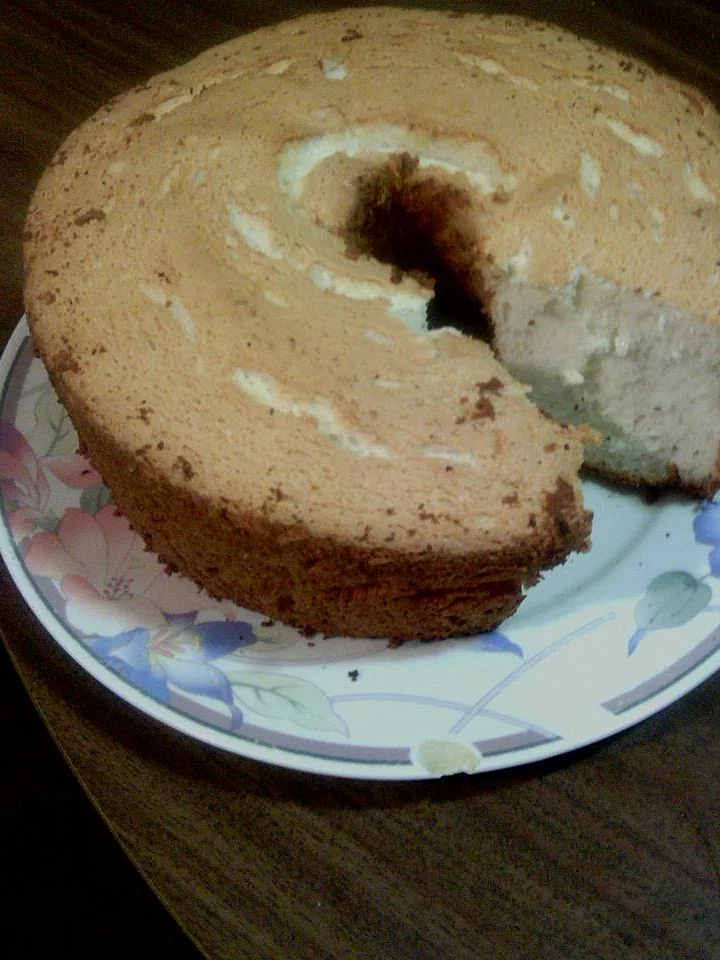

Angel Food Cake

Angel Food Cake with Toasted Almonds
Ingredients
- 1 ¼ cups confectioners' sugar
- 1 cup cake flour
- ¼ teaspoon salt
- 1 teaspoon cream of tartar
- 1 ½ teaspoons vanilla extract
- ¼ teaspoon almond extract
- 1 cup white sugar
- 1 cup chopped toasted almonds
Directions
- Preheat oven to 375 degrees F (190 degrees C). Sift the confectioners sugar and cake flour together and set aside.
- In a large bowl, whip the egg whites on high speed until foamy. Continue to whip on high speed while adding salt, cream of tartar, vanilla and almond extract. Gradually add the white sugar and continue to whip until whites have stiff peaks. Quickly fold in the flour mixture 1/4 cup at a time. Mix only until flour is incorporated. Do not deflate egg whites.
- Pour batter into a 10-inch tube pan. Sprinkle top with chopped almonds. Bake at 375 degrees F (175 degrees C) for 35 to 40 minutes, or until top of cake bounces back when lightly tapped. Remove from oven, invert pan, and allow to cool in the pan. When cake is cool, loosen sides with a long knife and remove to a serving dish.